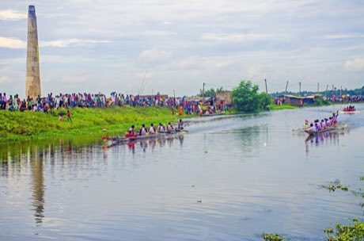

Home / Age of Contact and Craft / South Asia
Playable heritage gameNouka Baich
Also known as নৌকা বাইচ · village boat race
In the rainy season, villages of the Bengal delta send long, narrow boats down the river, each carrying a crew that paddles to the song and drum of a caller standing amidships. Whole villages line the banks to cheer.

_at_Thakrun_Khal,_near_Canning_09.jpg){kind=link}
How to play
- Watch the ring on the pad close: strike that side the moment it meets the pad.
- Alternate left and right with the caller's beat; two strokes on one side swing the boat toward the bank.
- Keep the stroke clean through the rough water and round the two marker buoys, and cross the line ahead of the other boats.
- Two races; your score is the average of both.
Rules at a glance
- Each stroke is graded by how close it falls to the beat; a stroke on the beat drives the boat, a stroke off it only tires the crew.
- Striking the same side twice drifts the boat toward the bank and scrapes away speed.
- Rough water narrows the timing window.
- A marker buoy is passed cleanly only with a steady stroke as you reach it.
- The river carries every boat gently downstream.
- Three rival boats race you; the boat across the line first wins.
About the tradition
Boat races are a favourite of the rainy and early autumn months across Bangladesh and the neighbouring river country of eastern India. A caller keeps the crew in time with song and drum while the banks fill with spectators.
Origins
Usually placed in the era of Age of Contact and Craft (about 1500 to 1800), although its exact origins are uncertain, within the cultural world of South Asia.
Credits
- Game design: World Heritage Games (original)
- Photo: Rangan Datta Wiki, CC BY-SA 4.0, source on Wikimedia Commons
- Text: CC BY-SA 4.0, World Heritage Games.
Sources

Get the app
Nouka Baich is one of 18 sports and skill games in the Sports & Skill of the World app for iPhone, iPad and Android. Live on Google Play. Submitted to the App Store; in review, and the store link appears here the day it goes live. One app, many traditions, no account needed.
More games to play


Hawaiian outrigger canoe racing
United States · RacingPlay preview · in the Sails & Canoes of the World app
More from Bangladesh

Bankura terracotta horse
Bangladesh · Crafts and making
Boli Khela
Bangladesh · Street and playground games

Dhokra lost-wax casting
Bangladesh · Crafts and making
Jamdani muslin weaving
Bangladesh · Crafts and making